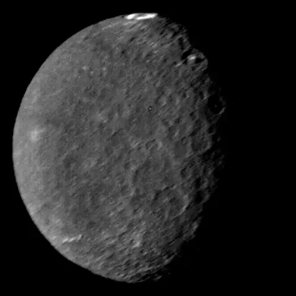

Umbriel - Lua de Urano

Introdução e História
Umbriel é uma das grandes luas de Urano, descoberta em 24 de outubro de 1851 pelo astrônomo inglês William Lassell, no mesmo dia em que descobriu a lua Ariel.
Seu nome foi inspirado no personagem sombrio Umbriel, um “espírito de trevas” presente no poema satírico The Rape of the Lock, de Alexander Pope, refletindo também a natureza extremamente escura de sua superfície.
Características Físicas: Diâmetro, Massa e Órbita
Umbriel tem aproximadamente 1.170 km de diâmetro, sendo uma das maiores luas de Urano.
Ela orbita Urano a cerca de 266.000 km de distância, completando uma volta ao redor do planeta em cerca de 4,1 dias terrestres.
Sua densidade indica que é composta por uma mistura de gelo de água e material rochoso, sem uma atmosfera significativa.
Geologia
A superfície de Umbriel é conhecida por ser extremamente escura em comparação com outras luas de Urano, refletindo apenas uma pequena fração da luz solar que incide sobre ela.
Ela é uma das luas mais crateradas do Sistema Solar, com crateras grandes e antigas que sugerem que sua superfície tem sido pouco modificada desde sua formação.
Uma de suas características mais distintas é a cratera Wunda, cujo interior forma um anel claro que contrasta com o terreno escuro ao redor — ainda não se conhece a origem exata dessa formação.
Missões Espaciais
Umbriel foi observada de perto apenas pela sonda Voyager 2 da NASA, durante seu sobrevoo de Urano em janeiro de 1986.
As imagens capturadas pela Voyager 2 mostraram uma superfície dominada por crateras e confirmaram sua reflectividade extremamente baixa, mas nenhuma missão posterior retornou dados adicionais detalhados sobre esta lua.
Atmosfera e Exosfera
Umbriel não possui uma atmosfera detectável. A ausência de camadas gasosas significativas faz com que sua superfície esteja exposta diretamente ao ambiente espacial, sem proteção de uma atmosfera densa.
Potencial de Habitabilidade
- Água Líquida: Não há evidências de água líquida na superfície ou próximo a ela.
- Fonte de Energia: Umbriel recebe pouca energia solar e não apresenta sinais de aquecimento interno significativo.
- Ingredientes Químicos: Embora gelo de água esteja presente, não há indicações de química complexa ou condições propícias à vida.
Umbriel não é considerada um mundo habitável, mas seus estudos ajudam a entender a história e evolução das luas geladas do Sistema Solar.
Curiosidades
Umbriel é a superfície natural mais escura entre as grandes luas de Urano, refletindo muito menos luz que suas vizinhas.
A definição de seu nome liga-se à palavra latina umbra (“sombra”), reforçando essa característica sombria.
A cratera Wunda, com seu anel claro, é uma das formações mais enigmáticas do Sistema Solar, ainda sem explicação definitiva.
Origem do Nome
Umbriel recebeu seu nome inspirado no personagem sombrio do poema The Rape of the Lock, do poeta inglês Alexander Pope — um espírito obscuro que representa sombra e tristeza.
Essa tradição de usar personagens literários para nomear as luas de Urano foi proposta por John Herschel, filho de William Herschel, e difere da prática de mitologia clássica usada em outros planetas do Sistema Solar.
Referências
- NASA. Umbriel – Moon of Uranus. Disponível em: https://science.nasa.gov/uranus/moons/umbriel/ . Acesso em: 26 dez. 2025.
- Britannica. Umbriel. Disponível em: https://www.britannica.com/topic/Umbriel . Acesso em: 26 dez. 2025.